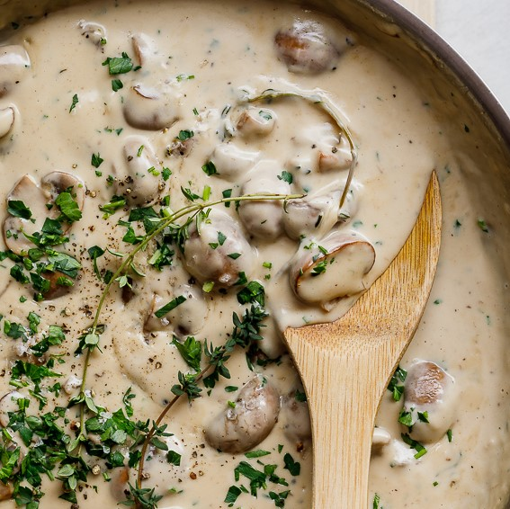

Ingredients
- 25 g unsalted butter
- 2 tbsp olive oil
- 4 cloves of garlic, minced
- 1 shallot, diced/li>
- 200 g brown mushrooms sliced
- 1/4 cup chicken stock
- 300 mL heavy cream
- Handful of parsley
Procedure
- Add olive oil and butter to a pan.
- Add garlic and shallots until fragrant.
- Add mushrooms and stir fry until browned.
- Add stock and deglaze.
- Add cream and simmer until thick.
- Garnish with parsley (optional).